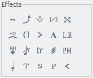
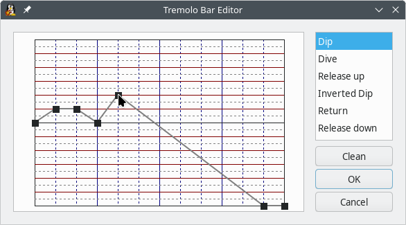
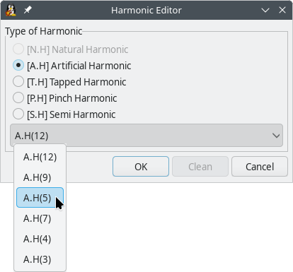
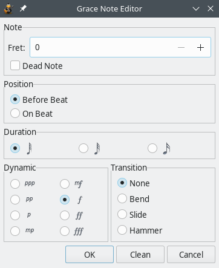

As you already know, playing guitar (and any other instrument) isn't just playing the notes in the right duration and dynamics. There are several "tricks" that are unique for any instrument. TuxGuitar supports effects specific for guitar and bass guitar.
Almost all note effects have an icon on the toolbar, but also can be accessed in Beat → Effects menu. If several notes are selected with click & drag then effect is applied on all selected notes. Else, the effect is applied on the current cursor position.
Vibrato
Vibrato is a note playing technique which makes the frequency (pitch) of a note oscillate a little bit in either direction (lower or higher). It makes the tone more colorful and accentuated. On guitar vibrato is played by slightly moving the finger upside-down or in left-right direction, which plays the sound in slightly higher pitch according to your moves.
In TuxGuitar vibrato effect has no special parameters - applying vibrato effect on a note will make a typical vibrato effect and mark the tone with the "vibrating waves" in the tab view.
Bend
String bending effect modifies the pitch of the played tone, but much more than the vibrato effect. Most often the result of bending a note is gradual pitch shift to another note. By the nature of bending that note has higher frequency then the note on the same fret without bend, because you bend the string thus adding more tension to the string.
In TuxGuitar, applying a bend effect to the note opens the Bend Editor dialog, which allows you fine tuning of the bend, showing you exactly how much tension your finger should use. Of course, the result of your modification can be heard.

First, notice the list box on the right of the dialog. Those are the presets which are most often used: Bend, Bend/Release, Bend/Release/Bend, Pre-Bend and Pre-Bend/Release. Bend only makes gradual transition to the target note, while Bend/Release also returns it to the beginning note. Pre-Bend is played when you first bend (add tension) to the string, and after that pick the string, so the first tone heard has higher pitch, and then gradually returns to the original note. You should notice that all the presets make bend 1 note (2 frets) higher, so you may need some intervention in the Editor to make the bend sound properly.
The Editor allows you fine bend tuning by drawing a graphic function of the bending amount (or pitch modulation/string tension). It works by placing dots in a diagram which are automatically connected with lines. The higher the dot is placed, the greater the bending amount will be. Notice that the diagram is separated horizontally with gray and red lines. Each full red line represents the pitch shift by 1 tone (2 frets), and each dashed red line represents the pitch shift by a semitone (1 fret). Gray line represents the pitch shift of 1/4 of a tone, which is 1/2 of a fret which is called a non-tempered note or "blue" note. The vertical blue lines divide the note duration on quarters, and dashed blue lines divide your note duration in 1/12 segments. You can place the dot only on intersection of a blue line and red/gray line. Left or right click can be used to place or remove a dot.
So, the bend represented on the picture above is a complex one: the first peak is almost a 2-tone bend/release (it is a slight underbend, because it bends for 3.5 frets), the second one is a slight bend shift to one higher half-tone (1 fret) and back, and the third bends one whole-tone (2 frets) and stays there for a little while.
If you have an existing bend effect applied to the note and click on the "Clean" button in the dialog, the effect will be removed.
A bend effect will be displayed with a curved up arrow in the tab view and a number indicating the pitch shift of the note.
Tremolo Bar
Tremolo bar is a term in TuxGuitar for all the effects you can make with a guitar tremolo arm. It allows note pitch shift in both directions and with a higher range of modulation. With tremolo bar effect TuxGuitar can modify the original note very precisely with the modulation diagram, allowing the pitch change up and down whole octave (8 tones, 12 frets) from the original tone.
When you apply tremolo bar effect on a note, Tremolo bar Editor dialog appears, very similar to the editor for the bend effect.
There are some presets in the list box placed on the right side of the dialog. Dip effect slowly lowers the pitch and then returns back. The opposite effect is Inverted Dip which increases the pitch and returns back. Dive slowly lowers the pitch but doesn't return back. The opposite effect is Return. Release up starts from the lower pitch and gradually returns to the original tone. Release down also ends at the original tone but starts at higher pitch. Note that all the presets have pitch offset of 1 tone (2 frets), so you might need to modify the tremolo bar diagram to get the desired effect.
Tremolo bar diagram editor consists of red and gray horizontal lines. Each red line represents one whole tone pitch offset (2 frets), and gray one semitone offset (1 fret). It is important to notice the black horizontal line in the middle: that is the frequency of your original tone (to which you applied the effect). There are 6 red lines in both directions from the black line, which means you can modify the original pitch up and down 8 tones (12 frets). Vertical blue lines separate the tone duration into small pieces. You can place the dot only on intersection of a blue line and red/gray line. Left click places a dot, and right click on the dot removes it.
So, the tremolo bar represented on the picture above is a complex one: First tremolo bar increases the pitch by one tone (2 frets), returns back to the original tone, quickly increases to +2 tone offset (4 frets) and then dives and dives until the tone is one octave (12 frets) lower than the original one.
If you have an existing tremolo arm effect applied to the note and click on the "Clean" button in the dialog, the effect will be removed.
When tremolo arm effect is applied to a note, besides the note in the tab view will be displayed an "x" with an arrow pointing down.
Slide
A slide is a guitar technique where the player sounds one note, and then moves (slides) their finger up or down the fretboard to another fret. If done properly, the notes between should also sound.
In TuxGuitar Slide connects the current note with the next note on the same string. Then in tab view you can see a line connecting two notes (upwards or downwards).
Dead Note
Dead note (sometimes referred as rake) is a playing effect which produces more of a percussive effect than a regular note with its pitch. Dead note has short and "clicking" sound. It is used very often by guitar players.
Because of the MIDI standard, all MIDI tab editing applications (Guitar Pro, TablEdit, TuxGuitar...) have a little bit different dead note implementation - it is not exactly dead. It is short, it is percussive, but you can adjust the pitch of the dead note.
So, in TuxGuitar, if you put a dead note in the scores, it will be heard like a muted zero-fret string. If you put a regular fret value and mark that note as dead, it will become a dead note, but will retain the previous pitch.
Dead note is marked with "X" sign in the tab.
Hammer-on/Pull-off
Hammer-on and pull-off are playing techniques which assume playing another note on the same string but without picking a string again. Heavy usage of hammer-on/pull-off in a short period is often referred as legato style. Hammer-on refers to the transition between a previous note and a note with a higher pitch. Pull-off is exactly the opposite, transition between a previous note and a note with a lower pitch.
In TuxGuitar Hammer-on and Pull-off are treated and displayed as the same effect. When you apply the effect, a connecting arc will be displayed between the current note and the next note on the same string, which marks that notes should be played with hammer-on/pull-off technique.
Ghost Note
Ghost note is effect that changes note's dynamics (loudness) to more quiet. The difference between a Ghost note and lesser dynamics is seen only visually, while it sounds the same.
Ghost note is marked by a note between parentheses ( ).
Accentuated and Heavy Accentuated Note
Like Ghost note, these effects change the note's volume. Accentuated note gives it a little louder dynamics, and heavy accentuated note makes the note even louder.
Accentuated note is marked with a ">" sign, and heavy accentuated with "^" sign.
Let Ring
If a note is marked LR (Let Ring), you should let the note last longer than its normal duration, i.e. let the tone fade out.
Harmonics
Guitar harmonics are somewhat special note effects because the result is a note with different pitch.
After you choose harmonics effect, the following dialog appears.
If you wrote a note on fret 3, 4, 5, 7, 9, 12, 16, 19... you will get the option to choose the Natural Harmonic effect. It would sound like natural harmonic on the same fret and string.
Otherwise, if you choose Artificial, Pinched, Tapped or Semi harmonics, you should choose a value from the combo box on the bottom of the dialog. If you chose artificial harmonic, you would be able to choose between these values:
| A.H(12) | Artificial harmonic one octave (12 frets) higher than the original note |
| A.H(9) | Artificial harmonic two octaves+major third (28 frets) higher than the original note |
| A.H(5) | Artificial harmonic two octaves (24 frets) higher than the original note |
| A.H(7) | Artificial harmonic octave+fifth (19 frets) higher than the original note |
| A.H(4) | Artificial harmonic two octaves+major third (28 frets) higher than the original note |
| A.H(3) | Artificial harmonic two octaves+fifth (31 frets) higher than the original note |
Note that A.H(4) and A.H(9) sound the same... The number besides denotes the "fret offset" between the original note and the harmonic "hot spot".
The difference between Artificial, Pinched and Tapped Harmonics is only in the playing technique, but Semi Harmonics even sound different on TuxGuitar - you can hear the original note along with the harmonic note.
Grace Note
Grace note is a music ornament. You can hear it very often in music, and it sounds like an attempt to play a note as short as possible. Grace notes in tabs are displayed smaller than the regular notes and seem to have no duration. In sheet music grace notes are represented as a small note before a regular note, sometimes with a slash through the note stem.
In TuxGuitar grace note can be applied on a position where a note already exists. Choosing to insert a grace note brings you the grace note editor dialog.
On guitar, grace notes are most usually played on the same string as the ordinary note, so you will first want to enter the fret on which grace note is played. If you check a dead note, muted percussive note will be played instead. Select the Position of the grace note. "Before beat" places your grace note before the ordinary note, which is played in exact time it is displayed in tab/scores. If you choose "On beat", grace note will be played on beat and original note immediately after grace note.
Next you can choose note Duration. "As short as possible" is welcome, so 1/64 note is default, but you can also pick 1/32 and 1/16 note if it suits your needs. Dynamics of the grace note is also an important property. By default, dynamics of a "normal" note is selected, but in editor dialog you can make grace note louder or more quiet than the succeeding note.
At last, you can choose type of the Transition, which marks the playing style. The default transition is None, which marks no distinct transition. Other available transitions are Bend and Slide (which also affects the way note is heard), and a Hammer to mark that grace note is played by hammer-on/pull-off technique.
If you have an existing grace note effect applied to the note and click on the "Clean" button in the dialog, the effect will be removed.
Trill
A rapid series of hammer-ons and pull-offs between a single pair of notes is called a trill. So, you can write all the trills manually, but TuxGuitar has the trill editor, which sometimes reduces the writing time.
Trill effect is applied on an existing note, which is considered the first note in a trill. Then the Trill Editor appears and allows you to choose the second note, and a duration between the hammer-ons and pull-offs. If there is existing trill effect and you select "Clean" on the trill editor, the effect will be removed.
Trill effect is marked in a tab with "tr" mark and a wave along the note duration.
Tremolo Picking
Tremolo picking means that the same note is picked in a rapid manner.
So, it would be the same if you write dozens of notes by yourself or use a tremolo picking effect, but if you apply the effect the tab will look nicer and it may save some time. Applying the tremolo picking effect on a current note will bring the tremolo picking editor, which allows you to choose how frequently it will be picked. If you already have a tremolo effect and click on "Clean" in the editor, the effect will be removed.
Tremolo picking effect is marked with three diagonal lines (≡) in scores or tab.
Palm Mute
Palm mute is an effect which is produced by placing the palm of a picking hand across the strings very close to the bridge. The strings retain their pitch, but the sound is more or less muted.
In TuxGuitar you can apply a palm mute effect on any note. It is removed the same way.
Palm mute effect is displayed with a P.M sign in scores or tab.
Staccato
Staccato is a playing technique where the player plays in a distinctive, "hopping" manner, trying to make note duration shorter than it should be normally.
In TuxGuitar the Staccato effect makes the note duration 50% of its original duration. When staccato effect is applied, a dot shows up above the note in the scores view. When applied again, it is cleared.
Tapping
Tapping is a guitar playing technique used more often on electric instruments. It is played using both hands on the fretboard, with a picking hand making hard hammer-ons and pull-offs.
In TuxGuitar Tapping has no effect on the sound. Instead, it just marks the tone which should be tapped with a picking hand. Tapped note is marked with the letter T above tapped note. Tapped notes can be combined with a Slide, Bend or hammer-on/pull-off if you need.
Slapping and Popping
Slapping and popping are techniques most commonly used on bass guitar. Slapping assumes hitting a string with the thumb of the strumming hand near the base of the guitar's neck. Popping is often combined with slapping and assumes snapping the strings (usually) with the index or middle finger of the same hand.
In TuxGuitar both Slapping and Popping don't really affect the sound, but only mark the style of playing. Above the slapping notes the letter S is placed, and above popping the letter P.
Fade in
Fade in is an effect which gradually increases the volume of a note, from zero to the current volume (depends on note dynamics). The effect is applied to each note independently and cleared in the same way. Note with a fade in is marked with a < sign above the tab.